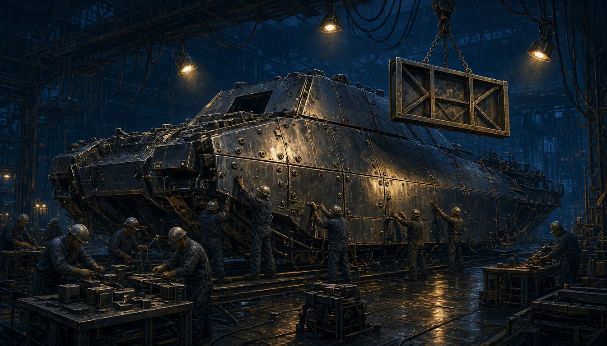

US envoys say Europe wins seat at Ukraine peace talks as Berlin meeting set
EU foreign ministers backed France, Germany, Italy, Poland, the UK and EU institutions representing Europe, with Coalition of the Willing leaders to meet in Berlin on 19 November.

Ukraine held new online talks on Monday with US envoys Steve Witkoff and Jared Kushner, US President Donald Trump's son-in-law, and European representatives on ending the war, after which participants agreed to meet in Berlin with the coalition of the willing. Ukrainian President Volodymyr Zelenskyy said the Berlin meeting is the next step towards getting Europe into the negotiations, to agree concrete, joint steps.
EU foreign ministers broadly endorsed France, Germany, Italy, Poland, the UK and the EU institutions representing Europe in the peace talks. German Chancellor Friedrich Merz announced the in-person meeting of Coalition of the Willing leaders in Berlin, where, according to Ukrinform, they are expected to agree the scale of support for Ukraine in 2027, mainly military aid.
At last week's US-brokered talks in Abu Dhabi, Kyiv and Moscow agreed a major prisoner exchange, but made no breakthrough on territory. On Monday, Zelenskyy said representatives of France, Germany, Britain, Italy and Poland had taken part fully in that day's discussion. He said the five would hold the same representation in future meetings with Russian negotiators.
On 16 November, Russian ballistic missiles hit the Northern and Southern bridges, two major transport arteries crossing the Dnipro river in Kyiv. Russia's army confirmed it had hit both bridges in a "massive attack" on Ukraine's infrastructure. Deputy Energy Minister Artem Nekrasov said overnight strikes on energy infrastructure left consumers without power in eight Ukrainian regions. Ukraine, for its part, struck the Crimean bridge for the second night in a row; Zelenskyy said it was in response to Russian attacks on Ukrainian infrastructure, including bridges.
Barrot and Sandu on Russia
France's foreign minister Jean-Noël Barrot said the Europeans are determined to take charge of their own security and not let anyone write their history for them. Moldova's president Maia Sandu said a Russian drone flew over her capital, Chisinau, and pledged to press for further sanctions against Moscow.
The US envoys and the Kremlin disagree over whether the talks will broaden. Kremlin aide Yuri Ushakov said Russia had not agreed to expand the talks beyond the existing Russian, Ukrainian and US delegations. No date had been agreed for the next round, he said. Kremlin spokesperson Dmitry Peskov said Russia wants peace lasting 'years, even centuries', not a temporary ceasefire, and added negotiations could take considerable time.
Kushner said Washington was making progress towards an agreement, working in coordination with Russia, Ukraine and Europe. "Important challenges remain, and a final agreement will require difficult decisions," he warned. Witkoff and Kushner have said Russia accepted a European seat at the table in the negotiations.
Abu Dhabi meeting lays ground
EU, French, German, Italian, British, Ukrainian, US and NATO representatives met in Abu Dhabi on 10 November to coordinate on ending the war. Participants said future arrangements must respect sovereignty, territorial integrity and independent decision-making, and provide credible security guarantees for Ukraine. In parallel, Russia, the US and Ukraine held trilateral rounds on 10 and 11 November. The partners agreed to keep working together toward broader multilateral discussions involving European partners and a comprehensive, lasting peace.
On Thursday 19 November, Merz, French President Emmanuel Macron and British Prime Minister Andy Burnham host the Coalition of the Willing in Berlin under the banner 'United for Peace in Ukraine and European Security'. On the same day, US President Donald Trump meets Chinese President Xi Jinping and Russian President Vladimir Putin in China, and he said he would discuss the war there. He said he believed Putin wanted to end the war and was backing down a little bit.